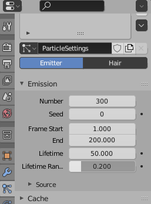

CS 424: Computer Graphics, Fall 2021
Blender Lab 3: Keyframe Animation
For the third Blender lab, you will make an animation, starting with the file frosty.blend. (There is a copy in /classes/cs124.) This file already has all of the objects that you need, except possibly for the "Something Extra" part of the lab. Your goal is to produce an animation very similar to this one:
The bit about the snowflakes is already partly done. The animation can be made entirely using keyframe animation, which is covered in Section B.3.1 — and you do not even need to know about F-curves. Keyframe animation in Blender was also demonstrated in class.
The work for this lab can be turned in up until Friday, November 12, and it should be submitted along with your work for the second Blender lab. You should turn in the Blender files frosty.blend and modeling.blend, an animation rendered from frosty.blend, and an image rendered from modeling.blend.
The Hat
You should plan for an animation that is about 480 frames long, which will be about 20 seconds long, at 24 frames per second. In the first part of the animation, the tophat should fly in from outside the frame and land on Frosty's head. In my version, this segment ends at frame number 145. The way the hat flips over several times before landing on Frosty's head was an accident, caused by the way that Blender interpolates between rotations.
I suggest starting in frame 145, or whenever you want to end the segment, with the hat on Frosty's head. Work back from there to frame 1. Pay attention to the camera view of the scene, to make sure that the hat stays in the picture.
Start by inserting a key frame for rotation and location at frame 145: Set the frame number to 145, for example by dragging the blue tab in the Timeline at the bottom of the window. Make sure the hat is selected. Press the I-key, and select "Rotation & Location" from the popup menu.
Set the frame number to a short time earlier. Move and rotate the hat, then hit I-key again to insert another rotation and location keyframe. This keyframe is a little touchy since you don't want the hat to cut through Frosty's head. Position the hat a little above the head, withtout too much rotation. Test the animation by dragging the blue tab in the Timeline. If necessary, you can go to a key frame, adjust the location or rotation, and insert new key values by using the I-key again.
Now you can work your way backward in time by repeating the process. Decrease the frame number, adjust the location or position of the hat, and insert a key frame. When you get to Frame 1, the hat should be just outside the camera's view.
The Magic
In the second segment of the animation, snowflakes of magic appear as if they are being emitted by a magic wand that is waving around Frosty. The magic emerges from the hat, circles Frosty a few times, and drops to ground level. This magic is implemented using a particle system.
The basic particle system is already set up. If you zoom the view out, you'll see three snowflakes under ground level. There is also a small sphere to the left of the snowflakes. The sphere is the "emitter" for the particle system. What it emits is copies of the snowflakes. The original snowflakes are there just to serve as templates for the snowflakes in the particle system. Particle systems can be quite complicated, and they are not covered in the textbook. But this particle system is already mostly configured. The only thing that you really need to change is the frames where the particles start and stop. In my version, the start frame is 155 and the end frame is 270. I also increased the number of particles to be emitted. To change those settings, select the sphere that emits the particles and go to the Particle Properties, as shown here:

The icon for accessing Particle Properties is the one just below the wrench, as shown int he picture. You want to set "Frame Start", "End", and maybe "Number."
The sphere is the source of the particles. You need to animate the sphere to make the source of the particles move. Move the sphere to its initial position, above or close to Frosty's head. Note that the sphere will not appear in a rendered image.
Now, you could animate the sphere itself using keyframe animation, but here is how I did it. I placed an Empty at the origin, and made it the parent of the sphere. (Select the sphere, and add the Empty to the selection. You might find it easier to select the Empty by shift-clicking its name in the scene graph view in the upper right. Then use Control-P, and select Object from the popup menu.) Then I applied keyframe animation to the Empty. I just had to animate the rotation of the Empty to make the sphere, which is tethered to it, move the way I wanted.
With the Empty selected, I inserted a Rotation keyframe at the start time of the motion. Then I changed the frame number to the end time of the motion and used the numerical inputs (N-key) to set the X-rotation to -120 and the Z-rotation to 1080, and inserted a second keyframe at that point. Doing the animation this way, only two keyframes are needed. (Getting the values right took a little experimentation.)
When you have things set up correctly, you should see the magic.
Frosty Awakens
In the last segment of the animation, after the magic, Frosty awakens. Frosty turns his head to the left, pauses a bit, turns it to the right, pauses a bit, looks forward, and smiles.
Note that Frosty's eyes, nose, mouth, and hat are all parented to the head, so they will all move with the head when you animate that. Use rotation keyframes to make Frosty look up, left, right, and forward. Don't make the motions too fast, and do put a pause between the motions. The animation looks better with the pauses.
For the smile, you want to animate at least four of the five pieces of coal that make the smile. If they are all selected, you can insert Location keyframes for them all at once. You will have to move each piece up, but you will also have to move them forward a bit so that they are remain on the surface of the head. This can be touchy. You can select the head and its features and use the "/" key if you want to work them in isolation.
Something Extra
Finally, you should add something extra to the animation. Be creative. For example, you could have some text fly in with credits or some message. If you are ambitious, you might try to make it snow continuously by putting a large plane above the scene and using it as an emitter for another particle system, but you might need some help on that. Maybe Frosty can walk away at the end; since everything is ultimately parented to Frosty's base, you just have to move that to make him move. Maybe he can wave, but I should have given him better arms for that. My own extra is a little subtle: As the magic surrounds Frosty, he gets brighter and a little multicolored. The effect ends when the magic ends. I do this by setting the input for the "Emission" property of the material to be a Noise Texture, and animating the "Emission Strength" property.
Rendering an Animation
Rendering animations is discussed in Section B.3.4. The file frosty.blend is already configured to make an animation in MP4 format, and to save it in the same directory as frosty.blend with a name such as frosty0000-0480.mp4. (But be sure to set the end frame for the animation to include the entire animation that you have created.) You can render the animation using the "Render Animation" command in the "Render" menu. However, it will take quite a while — possibly several hours on a lab computer.
It is nicer to let the animation render unattended in the background without having to stay logged into the computer. If you want to do this, note that Blender will only do background rendering for the Cycles renderer; if you try to use Eevee for background rendering without access to a display, it will fail. So be sure that the renderer is set to Cycles. Also, unfortunately, there is a problem with the file system that is used for your home directory — the permission to access your home directory goes away when you log out. However, it is possible to save the animation in the /tmp directory, on the local computer. You will just have to go back to the same computer and copy it into your home directory when it has finished rendering. (You might want to use one of the csfac or cslab computers, which you can ssh to, so you don't have to go back to the computer physically.) If you want to try this, log on to the computer, possibly using ssh. Then create a folder in the /tmp directory, copy frosty.blend into it, cd into that directory, and give the command for background rendering. If you're in the directory that contains your frosty.blend, it looks like this:
mkdir /tmp/frosty cp frosty.blend /tmp/frosty cd /tmp/frosty nohup nice /opt/blender-2.93/blender -b frosty.blend -a
You can then simply close the terminal window that you are working in. The nohup means that closing the window and logging out will not also kill the process that is running the command. The nice means that the process will only run while the computer has nothing else to do. The rest of the line is the command for rendering the animation that is set up in the file frosty.blend.
You can use the top command in a terminal window to check that Blender is still running. You should see blender at the top of the list of processes most of the time, if it is rendering the animation.